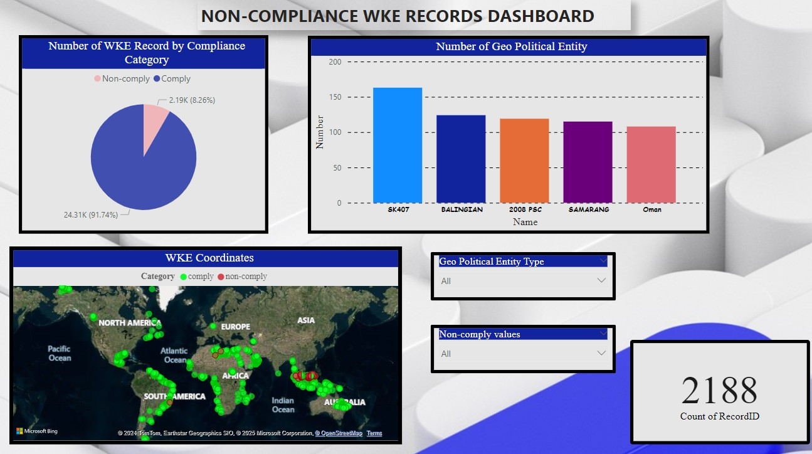
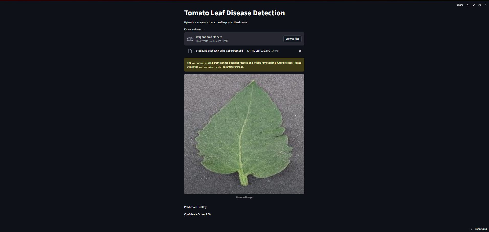
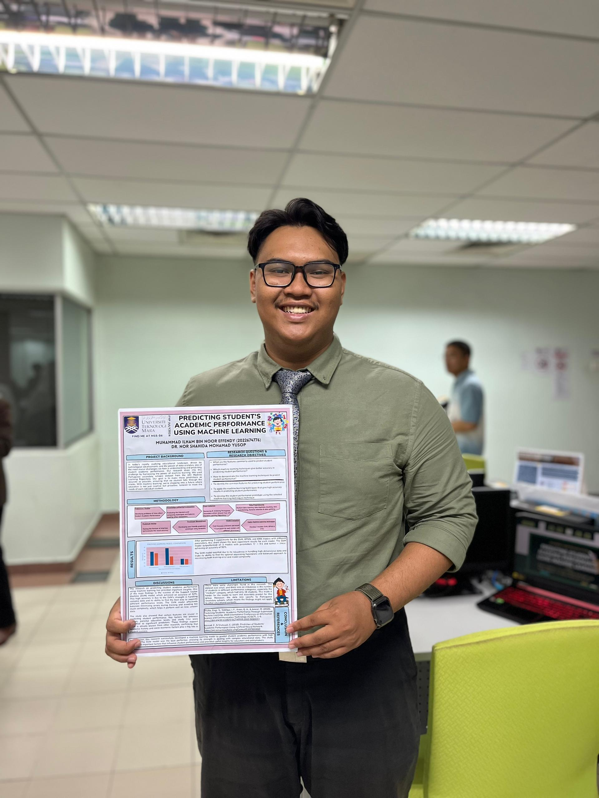
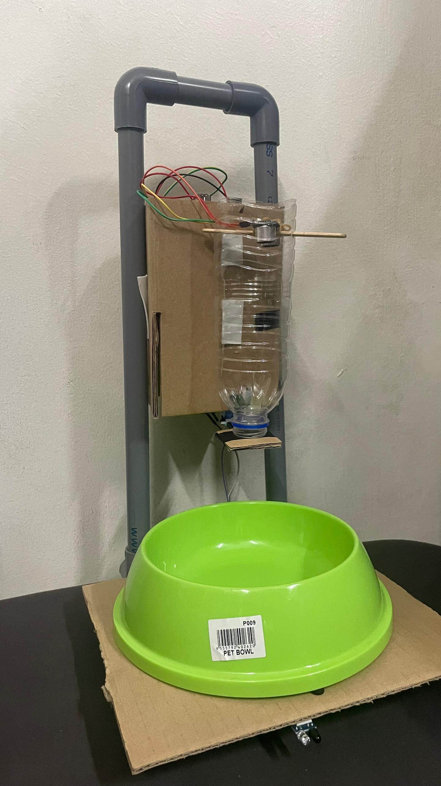

February 7, 2025
The main goal of this project was to make sure that the records followed the standard OSDU pattern so that users could get the most valuable from the data. Another aim was to make it easier for users to work with wellbore data in software like Petrel. Finally, the project focused on preventing the ingestion of wellbore child records like well logs and trajectories if the parent wellbore record was non-compliant. This helps keep the data accurate and reliable for future workflows.

The primary objective of this project is to migrate wellbore records from the production partition to the lab partition. To overcome the challenges, I developed the automated transformation and ingestion data using python scipt for trajectory and markerset ingestion. There are 2 key steps including transformation and ingestion. The wellbore records contains of 3 chilldren records that need to pass the key steps, WellLog, Trajectory and MarkerSet records.

This project creates a prototype to help farmers quickly find and identify diseases in tomato leaves using deep learning technology. Instead of manually checking the leaves, which can be slow and inaccurate, the prototype uses computer models trained on images of diseases tomato leaves to detect problems like Late Blight and Tomato Mosaic Virus. Farmers can upload photos of their tomato plants, and the system will tell them if there's a disease, helping them take action sooner and protect their crops.

This study focuses on predicting student academic performance through machine learning techniques by analyzing data from Portuguese secondary schools. It identified 15 key factors that influence student outcomes such as previous grades, parental education levels and study time. Several models were tested including Support Vector Machine (SVM), Backpropagation Neural Network (BPNN) and k-Nearest Neighbors (KNN) with the SVM model achieving the best accuracy at 92.0%. A practical prototype was developed using the SVM model and Streamlit to provide real-time predictions based on student attributes. The study highlights the need for diverse and comprehensive datasets and suggests that future research should include factors like mental health, social activities and school infrastructure.

The Smart Pet Feeder is an Internet of Things (IoT) project designed to provide an automated feeding solution for pets. It incorporates sensors, microcontrollers, and a cloud-based application to enable remote monitoring and control. The Smart Pet Feeder system comprises an Arduino UNO as microcontroller, FC-51 IR sensor for motion detection, HC-SR04 ultrasonic sensor for food level measurement in container and a Blynk application for push notification to pet owner to fill up their pet food in container when getting low.